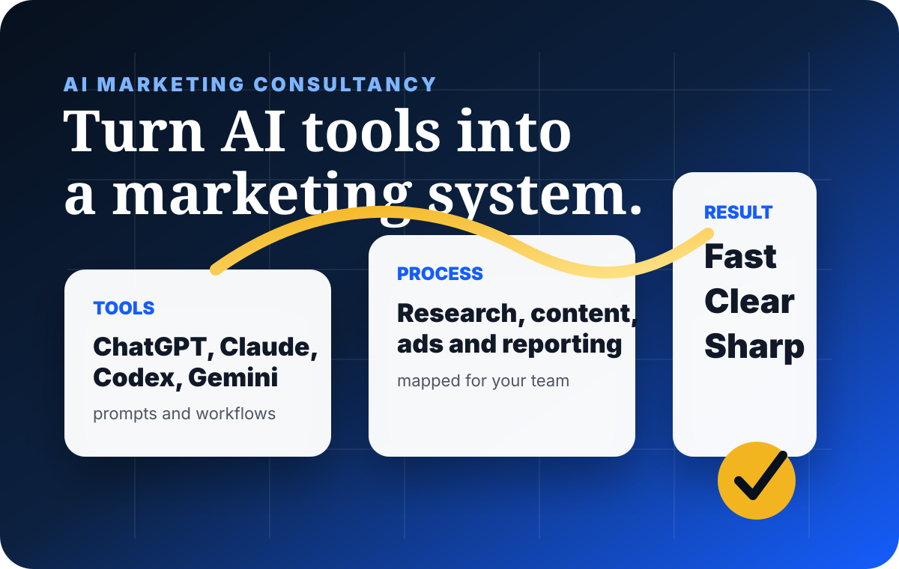

Find where AI can save time
We review your current marketing process and identify what can be improved with AI-assisted research, planning, production, reporting, and automation.
AI marketing consultancy
WTB helps companies turn tools like ChatGPT, Codex, Claude, Gemini, Canva, CapCut, Perplexity, automation tools, and reporting systems into a practical marketing workflow instead of scattered experiments.
What we fix
Buying subscriptions is not the same as improving execution. We help your team decide where AI should sit in research, content planning, copywriting, campaign ideation, website updates, reporting, ad creative, briefs, SOPs, and approval workflows.
The result is not “AI for show.†The result is faster work, cleaner handoffs, better prompts, fewer repeated tasks, stronger output, and a team that knows when to use AI and when human judgment must lead.

What we can help with
We review your current marketing process and identify what can be improved with AI-assisted research, planning, production, reporting, and automation.
We build prompts for content ideas, captions, email/SMS campaigns, ad angles, customer research, competitor review, and reporting summaries.
We help teams use ChatGPT, Codex, Claude, Gemini, Perplexity, Canva, CapCut, Runway, Seedance, and automation tools based on the actual job.
We show your team how to brief AI, review output, protect brand voice, avoid weak content, and keep final decisions strategic.
We help map simple automations for lead follow-up, reporting, content planning, brief collection, and campaign tracking.
If you need an extra hand, WTB can help set up the workflow, write the prompts, build the templates, and support your team until the system works.
Best for
This is useful for companies, founders, agencies, ecommerce teams, real estate teams, education brands, creators, and service businesses that want AI to improve speed and quality without losing brand judgment.
Next step
We will recommend the AI workflow, tools, prompts, and implementation support that makes sense for your marketing goals.